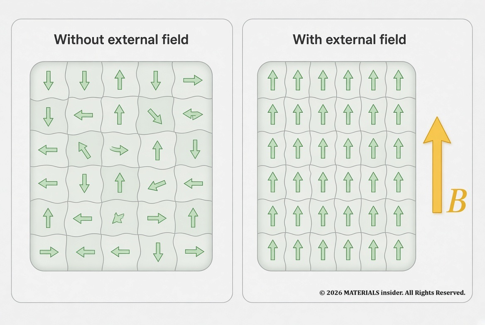
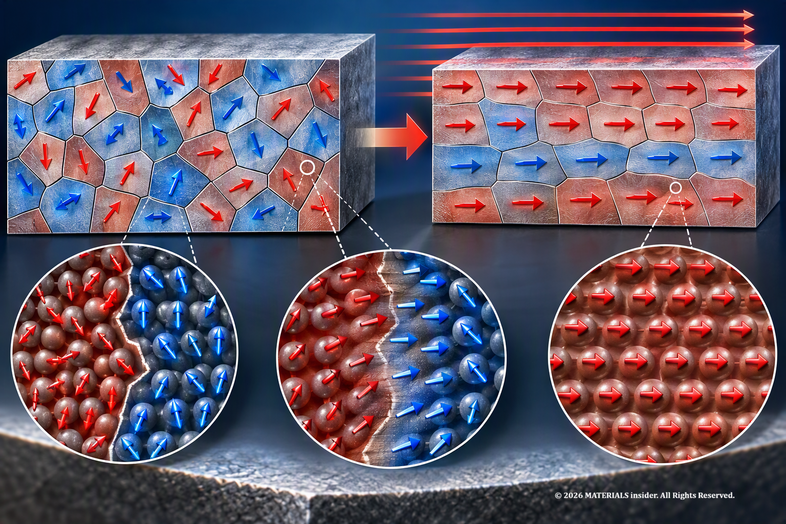
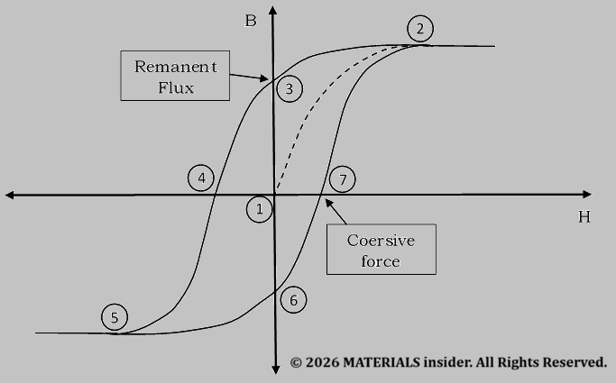
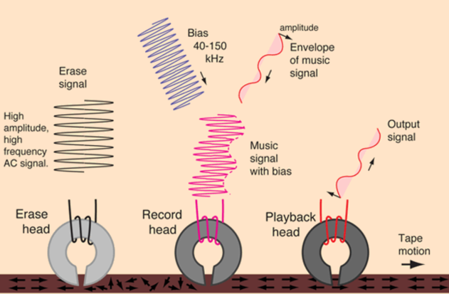
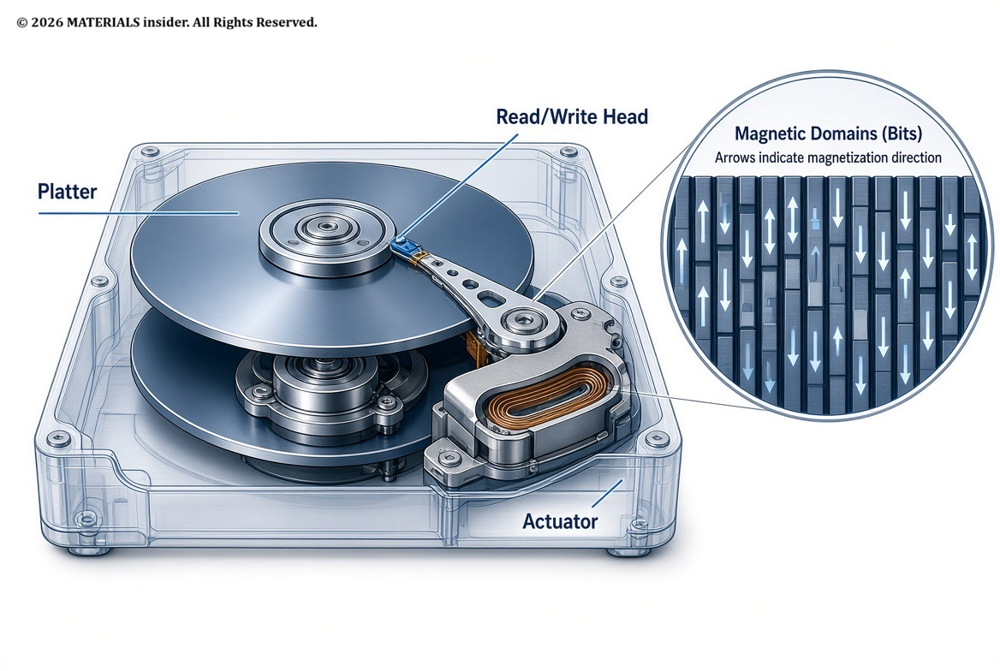
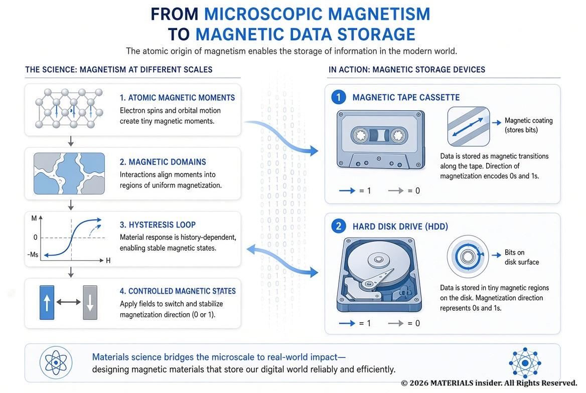

Magnetism for Recording Devices
Magnetism is a natural phenomenon that can be observed all around us. This article explains how magnetism is used to make data storage devices. Data storage is not purely an electronic process—it is completely a property of the materials. Magnetism in ferromagnetic materials is the hidden physics that lets hard disks and magnetic tapes store digital data for years without power.
Engineers usually concern themselves only with ferromagnetic materials. Iron (Fe), Nickel (Ni), Cobalt (Co) and Gadolinium (Gd) are ferromagnetic materials at room temperature. Here it is useful to consider the total magnetic flux density B (the internal magnetic field) produced by an applied magnetic field H (the external magnetic field). They therefore often find the B-H curve, also called a magnetization curve, more useful than the M-H curve.

These materials are divided into small regions called magnetic domains. The boundaries separating these magnetic domains are called domain wall. Without an external magnetic field, the domains may be oriented in different directions, resulting in little or no overall magnetization (neutral). But when an external magnetic field is applied, the magnetization within the domains tends to align with the applied field. However, this magnetic alignment also has to overcome the effects of thermal vibrations. That's how permanent magnets. are made.

Hysteresis: When the Material Remembers
Before materials get permanent magnetism, there is an intermediate state in which the magnetization process can be reversed. If the domains become strongly aligned with the external magnetic field, they may not completely return to their original state after the field is removed. To reverse that, a magnetic feild must be applied in the opposite direction. This behaviour produces a Hysteresis loop.

- Neutral material: No external and internal magnetic fields
- Material magnetized positively: There are external and internal magnetic fields (Maximum level)
- Remaining internal magnetic field: External field is zero
- Material neutralized: There is negative external magnetic field
- Material magnetized negatively: There are external and internal magnetic fields (Maximum level)
- Remaining internal Magnetic field: External field is zero
- Material neutralized: There is positive external magnetic field
These remaining magnetic fields can be used as electronic memorization for 1 and 0. Once the external force is applied, the magnetic domains will retain their internal field even after the external force is removed. When it is considered as "1", it can be read again by measuring the magnetism. Magnetic tapes (music tapes) and hard drives operates based on this principle. To read that, electromagnetic coils can be used as well as records.
Two properties of the hysteresis loop are especially important for magnetic recording: remanence and coercivity. "Remanence" is the magnetization remaining after the external field is removed, while "coercivity" indicates the reverse field required to reduce the magnetization toward zero.
How Magnetism Becomes 0s and 1s
Every photograph, document, video or program stored on a hard disk must exist in a physical form ultimately. A computer represents information digitally using 0s and 1s, but the storage device needs physical states that can retain information even when the power is switched off. In a hard disk drive, those magnetic states are represented using controlled magnetic patterns in the recording medium.

Magnetic recording is one of the amazing technologies at that time. Instead of continuously using electricity to remember information, magnetic storage takes advantage of materials that can retain magnetization. This allows information to remain stored for long periods without a continuous power supply.
This magnetic “memory” can be engineered to make store information for a longer time. A magnetic recording medium contains extremely small magnetic regions. A write head produces a localized magnetic field that changes the magnetization of the recording medium as it passes near the head.
When the writing field disappears, the magnetic material retains the recorded state because of its magnetic properties. Therefore, the storage medium does not need continuous electrical power simply to maintain the recorded information.
Reading information is also a very important process like writing information. A storage device also needs to detect the recorded magnetic patterns/information. When information is required, a read head senses the changes in the magnetic state of the recording medium. That changes are converted into electrical signals. Then the device reconstruct the stored information in to digital signal using electronics.
Therefore, the overall process is:
-WRITE-
Digital information → Electrical signal → Recording head → Magnetic field → Magnetic state stored
-READ-
Stored magnetic state → Read head → Electrical signal → Electronic processing → Digital information
Magnetic Tape and Hard Disk Drives
The same basic principle has been used in several generations of storage technology.

Magnetic tape glued (by PU) a thin magnetic coating (ferric iron oxide (Fe₂O₃), chromium dioxide) on top of the flexible tape (PET or Mylar). During recording, the tape moves past a recording head. The changing magnetic field produced by the head creates a corresponding magnetic pattern in the coating. This principle made magnetic recording so important for audio, video and computer-data storage.
A hard disk drive, or HDD, uses the similar concept at a far smaller scale. Instead of flexible tape, data is stored on rigid rotating platters covered with magnetic material. An actuator positions the read/write head extremely close to the rotating platter. Very small magnetic regions allow a tremendous quantity of information to be stored in a relatively small physical area.
Though we see files, photographs and videos on a computer at the physical level a computer sees something completely different: zeros and ones. But for a magnetic disks or magnetic materials, it's a tiny and carefully controlled magnetic states. That is what makes magnetic recording so amazing. The material becomes the digital memory.

A Corrective Note About Gramophone Records
There is one important correction. Traditional gramophone or vinyl records do not use magnetic storage. Their audio information is stored mechanically as physical variations in a groove. A stylus follows those variations during playback. Magnetic tape and hard disk drives, by contrast, rely on changes in the magnetic properties of a recording medium.
References
1. HyperPhysics, “Magnetic Recording,” Georgia State University.
2. Cullity, B.D. & Graham, C.D. Introduction to Magnetic Materials, 2nd ed., Wiley-IEEE Press, 2009.
3. Mee, C.D. & Daniel, E.D. Magnetic Recording Technology, 2nd ed., McGraw-Hill, 1996.
Space Shuttle Challenger Disaster (1986)
The Space Shuttle Challenger disaster was NOT caused by a rocket engine failure or software malfunction. The root cause was the loss of sealing performance in rubber O-rings located within the Solid Rocket Booster.
Read Full Article →Tacoma Narrows Bridge Collapse (1940)
The Tacoma Narrows Bridge Collapse of 1940 remains one of the most important engineering failures in history and a classic materials science case study which was caused by aeroelastic flutter rather than simple resonance.
Read Full Article →Share this article:
Advertisement 1/4
Advertisement 2/4
Advertisement 3/4
Advertisement 4/4